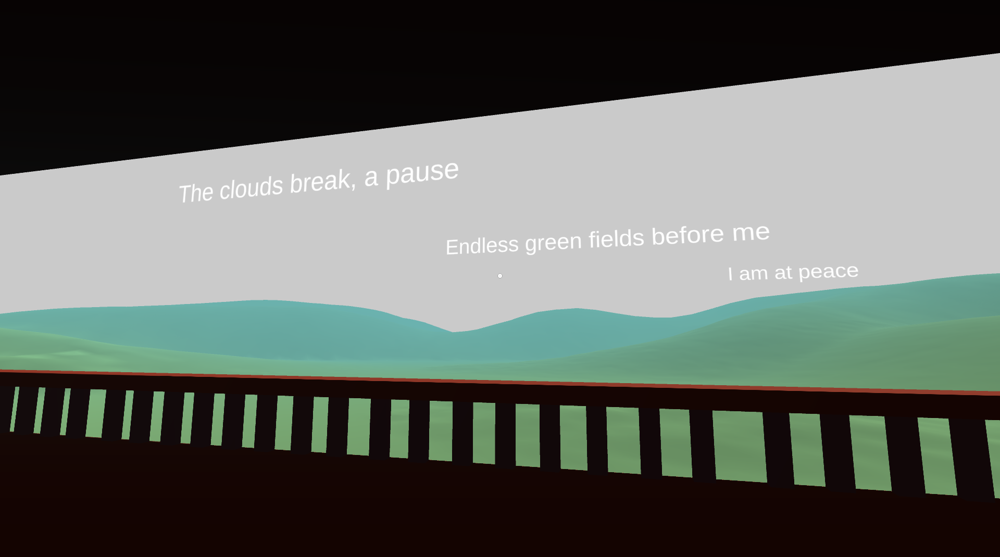

The second project of the semester was an environment somewhat similar to the first. I chose to use a childhood memory from my time in Japan applying the concepts of Haiku. Haiku is a snapshot, a moment in time and I wanted to capture a moment, similar to how Basho used haiku to capture the world around him. This memory was one where on a rainy day in the mountains, the rain stopped and the sun slowly came through the clouds and lit up the misty environment around us. I used a randomised Haiku script. Each passage of the Haiku can be clicked on by the user and it will generate a random preset line. The user can click on the different passages to create their own haiku as they look at my environment. I include the sounds of rain at the start of the scene, which then fades out in order to emphasise the resulting silence. This used my knowledge of Ma from the previous project. This environment was successful in conveying my experiences in a minimal way, however the experience could have been made more interactive. Making the environment change as the user changes the haiku would have made the environment more interesting and engaging.